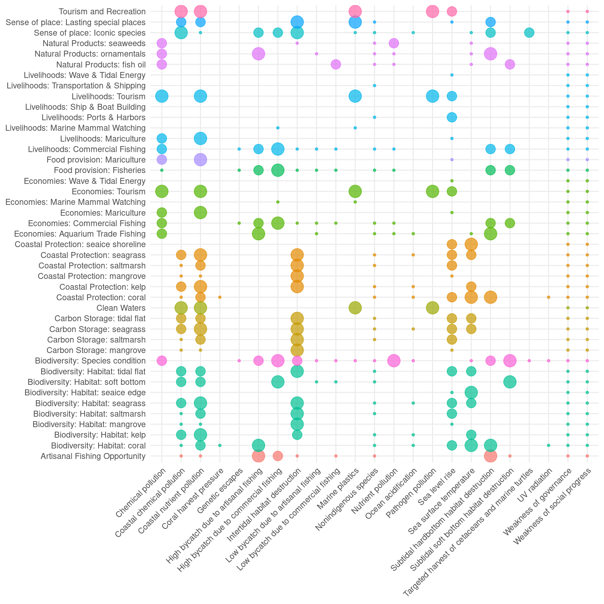

Pressures overview
Pressures stress marine systems and threaten future delivery of benefits, and thus, suppress future status. We determine the type and magnitude of pressures acting on each goal to better predict what goal scores will look like in the near future.

Figure 1. Pressures acting on a goal include both ecological and social pressures. For the global OHI assessment, ecological pressures include 5 general categories: fishing pressure, habitat destruction, climate change, water pollution, species/genetic introductions.
Pressures include both ecological and social pressures, which are equally weighted in the global OHI assessment. At global scales, little evidence exists to support unequal weighting of ecological and social pressures for most goals, but at local or regional scales different weightings may make more sense.
For ecological pressures, we include five broad, globally-relevant, categories:
pollution
species introductions
habitat destruction
fishing pressures, and
climate change
The social pressure category describes the lack of effectiveness of government and social institutions.
Each pressure category may include several stressors (see below for full list of stressors). For example, the climate category includes: increases to sea surface temperature, ocean acidification, sea level rise, and changes to UV radiation. We determine the intensity of each individual stressor within each country on a scale of 0-1, with 1 indicating the highest stress.
Description of global pressure data (click to expand)
We then link the stressors to specific goals, by estimating the rank sensitivity of each goal to each stressor (Figure 2). For example, in the global assessment, coral habitat is extremely sensitive to increasing sea surface temperature but is not particularly sensitive to trash pollution.
Figure 2. The impact of the global pressures on the goals. The larger the point, the larger the impact (ranging from 0 - 3). Points of the same color are the same goal, but some goals have different components that are affected differently. For example, the pressures affecting the Habitat goal will depend on the specific habitat.

We estimate the total pressure acting on every goal in each country based on the relative sensitivity of the goal to each stressor and the magnitude of the stressor in each country. This is accomplished by first combining the ecological stressors within each of the 5 categories (e.g., pollution, climate change), then combining the 5 ecological categories into a single score, and then averaging the ecological and social categories.
The pressure estimate for each goal and country is then combined with the trend and resilience estimates to calculate goal scores.